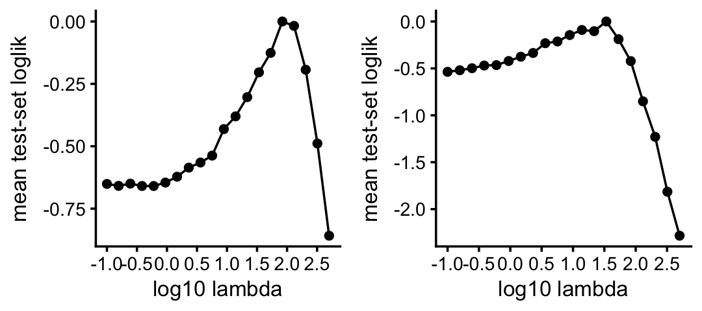
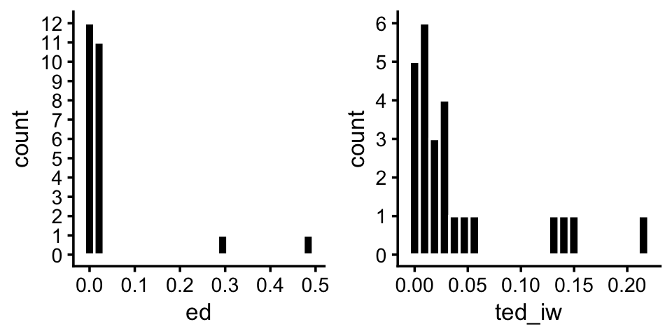
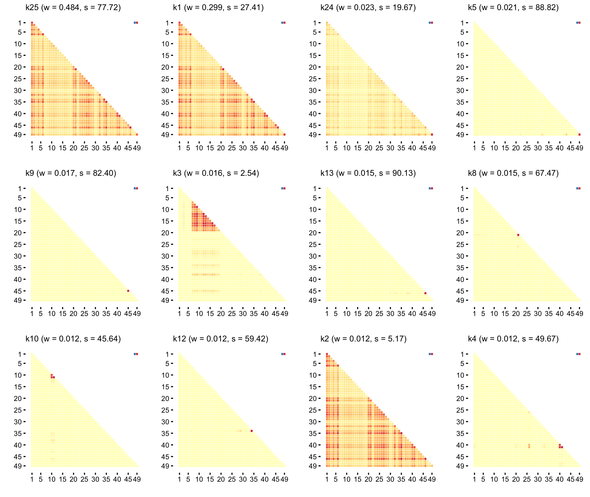
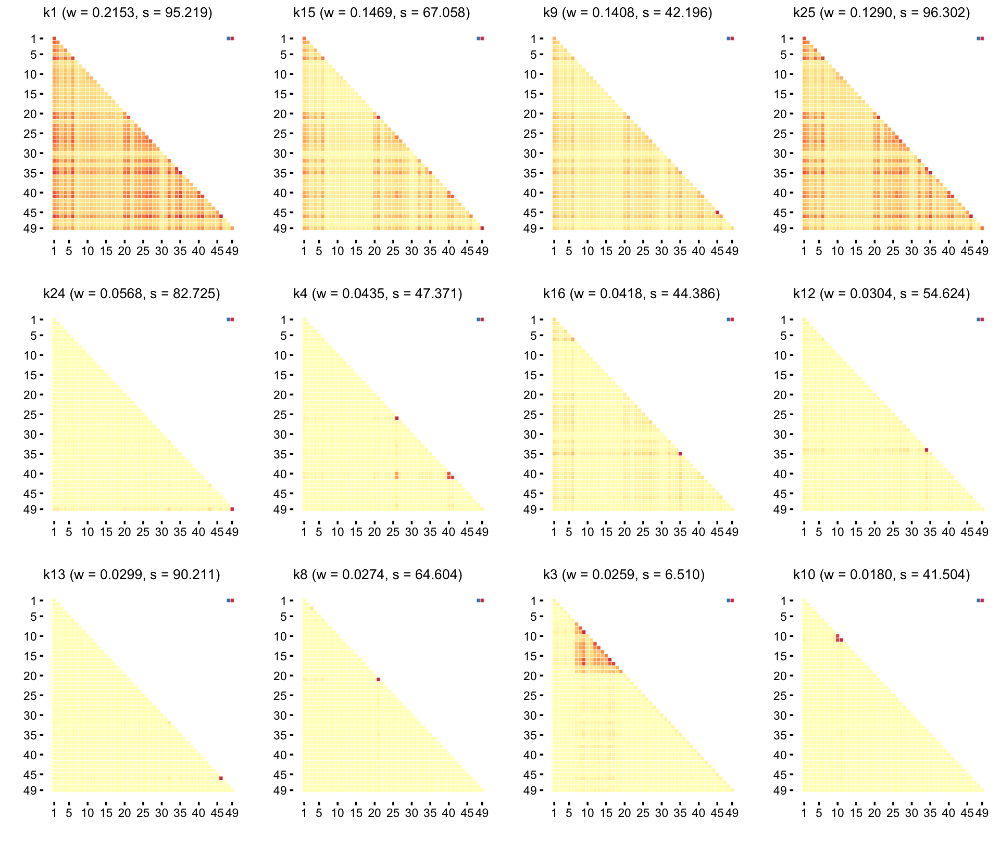
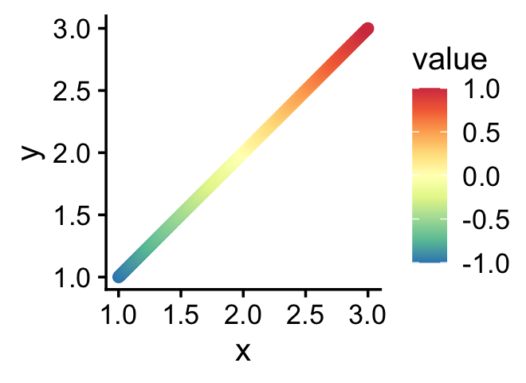
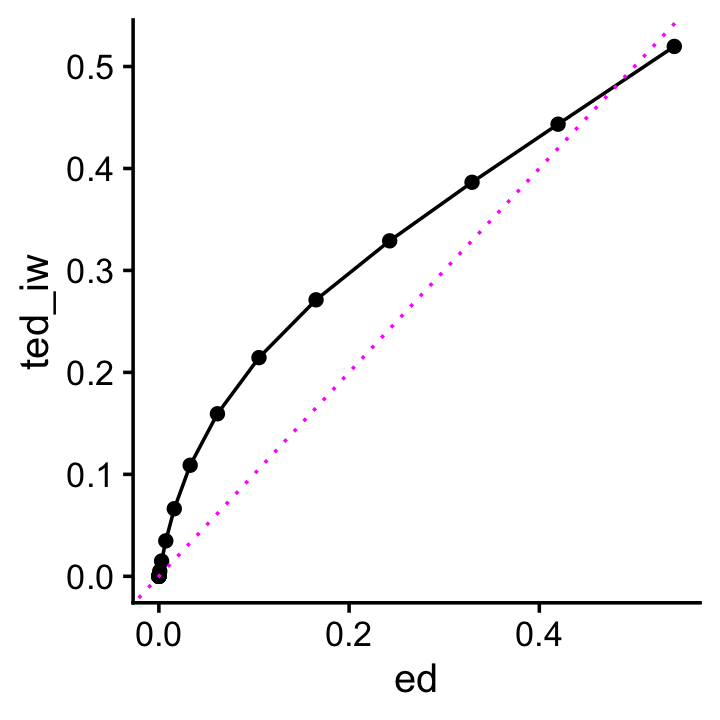

Last updated: 2025-08-22
Checks: 6 1
Knit directory: udr-paper/
This reproducible R Markdown analysis was created with workflowr (version 1.7.1). The Checks tab describes the reproducibility checks that were applied when the results were created. The Past versions tab lists the development history.
Great! Since the R Markdown file has been committed to the Git repository, you know the exact version of the code that produced these results.
Great job! The global environment was empty. Objects defined in the global environment can affect the analysis in your R Markdown file in unknown ways. For reproduciblity it’s best to always run the code in an empty environment.
The command set.seed(20221016) was run prior to running
the code in the R Markdown file. Setting a seed ensures that any results
that rely on randomness, e.g. subsampling or permutations, are
reproducible.
Great job! Recording the operating system, R version, and package versions is critical for reproducibility.
To ensure reproducibility of the results, delete the cache directory
gtex_main_cache and re-run the analysis. To have workflowr
automatically delete the cache directory prior to building the file, set
delete_cache = TRUE when running wflow_build()
or wflow_publish().
Great job! Using relative paths to the files within your workflowr project makes it easier to run your code on other machines.
Great! You are using Git for version control. Tracking code development and connecting the code version to the results is critical for reproducibility.
The results in this page were generated with repository version 5aa2e55. See the Past versions tab to see a history of the changes made to the R Markdown and HTML files.
Note that you need to be careful to ensure that all relevant files for
the analysis have been committed to Git prior to generating the results
(you can use wflow_publish or
wflow_git_commit). workflowr only checks the R Markdown
file, but you know if there are other scripts or data files that it
depends on. Below is the status of the Git repository when the results
were generated:
Ignored files:
Ignored: .DS_Store
Ignored: analysis/gtex_main_cache/
Untracked files:
Untracked: gtex_cv.pdf
Untracked: gtex_sharing_pattern_legend.pdf
Untracked: gtex_sharing_patterns_ed.pdf
Untracked: gtex_sharing_patterns_ted_iw.pdf
Untracked: gtex_weights.pdf
Note that any generated files, e.g. HTML, png, CSS, etc., are not included in this status report because it is ok for generated content to have uncommitted changes.
These are the previous versions of the repository in which changes were
made to the R Markdown (analysis/gtex_main.Rmd) and HTML
(docs/gtex_main.html) files. If you’ve configured a remote
Git repository (see ?wflow_git_remote), click on the
hyperlinks in the table below to view the files as they were in that
past version.
| File | Version | Author | Date | Message |
|---|---|---|---|---|
| Rmd | 5aa2e55 | Peter Carbonetto | 2025-08-22 | wflow_publish("analysis/gtex_main.Rmd", view = F, verbose = T) |
| html | 6609850 | Peter Carbonetto | 2025-08-21 | Added ggsave calls to the gtex_main analysis. |
| html | b177bee | Peter Carbonetto | 2025-08-21 | Added ggsave calls to the gtex_main analysis. |
| Rmd | 971a61b | Peter Carbonetto | 2025-08-21 | wflow_publish("analysis/gtex_main.Rmd", view = F, verbose = T) |
| html | e6df564 | Peter Carbonetto | 2025-08-21 | Added the final estimates of the effect-sharing patterns to the |
| Rmd | 167721d | Peter Carbonetto | 2025-08-21 | wflow_publish("analysis/gtex_main.Rmd", view = F, verbose = T) |
| Rmd | 6c3795d | Peter Carbonetto | 2025-08-20 | Working on the new heatmaps in gtex_main.Rmd. |
| Rmd | ac94889 | Peter Carbonetto | 2025-08-20 | Started to summarize the results of gtex_all_data.R in gtex_main.Rmd. |
| Rmd | e541bee | Peter Carbonetto | 2025-08-20 | Added some detail about the table summarizing the results in gtex_main.Rmd. |
| html | e54b998 | Peter Carbonetto | 2025-08-20 | Ran wflow_publish("analysis/gtex_main.Rmd"). |
| Rmd | a28a47e | Peter Carbonetto | 2025-08-20 | Added a table to gtex_main.Rmd summarizing the gtex_main.R output. |
| Rmd | 9b81794 | Peter Carbonetto | 2025-08-18 | Added code chunks to gtex_main.Rmd summarizing the results of the cross-validation. |
| Rmd | 3d8d8f1 | Peter Carbonetto | 2025-08-18 | A few improvements to gtex_main.Rmd. |
| html | beac5d8 | Peter Carbonetto | 2025-08-18 | Ran wflow_publish("analysis/gtex_main.Rmd"). |
| Rmd | 43ffa86 | Peter Carbonetto | 2025-08-18 | wflow_publish("analysis/gtex_main.Rmd") |
| Rmd | d1f4672 | Peter Carbonetto | 2025-08-18 | Added a new workflowr page gtex_main for summarizing the updated analysis of the gtex data. |
Here we summarize the results of the updated udr analysis of the GTEx data.
Load the packages used in the analyses below:
library(mashr)
library(ggplot2)
library(cowplot)Load the z-scores:
dat <- readRDS("data/data_analysis/GTEx_V8_strong_z.rds")
dim(dat$strong.z)
# [1] 15636 49Load the results of the cross-validation:
load("output/data_analysis/gtex_cv_out.RData")These two plots summarize the results of the cross-validation, showing the setting of \(\lambda\) vs. the test-set log-likelihood (relative to the largest achieved test-set log-likelihood):
n <- 3127
pdat <- data.frame(lambda = log10(LAMBDA),
iw = cv_iw_loglik_test/n,
nn = cv_nn_loglik_test/n)
pdat <- transform(pdat,
iw = iw - max(iw),
nn = nn - max(nn))
p1 <- ggplot(pdat,aes(x = lambda,y = iw)) +
geom_point() +
geom_line() +
scale_x_continuous(breaks = seq(-1,3,0.5)) +
labs(x = "log10 lambda",y = "mean test-set loglik") +
theme_cowplot(font_size = 10)
p2 <- ggplot(pdat,aes(x = lambda,y = nn)) +
geom_point() +
geom_line() +
scale_x_continuous(breaks = seq(-1,3,0.5)) +
labs(x = "log10 lambda",y = "mean test-set loglik") +
theme_cowplot(font_size = 10)
plot_grid(p1,p2,nrow = 1,ncol = 2)
| Version | Author | Date |
|---|---|---|
| e54b998 | Peter Carbonetto | 2025-08-20 |
These are the settings of the penalty strength parameter \(\lambda\) that achieve the best test-set log-likelihood for the inverse Wishart (IW) penalty and the nuclear norm (NN) penalty:
LAMBDA[which.max(cv_iw_loglik_test)]
LAMBDA[which.max(cv_nn_loglik_test)]
# [1] 83.37822
# [1] 34.00783Now load the results from running the different variants of udr on the training sets and the “left out” test sets:
load("output/data_analysis/gtex_main_out.RData")Summarize the results in a table:
methods <- rownames(loglik_test)
numiter <- matrix(0,10,5)
rownames(numiter) <- methods
colnames(numiter) <- paste0("k",1:5)
for (i in methods) {
numiter[i,] <- sapply(fits,function (x) nrow(x[[i]]$progress))
}
timings <- timings/60
loglik_test_relative <- rowSums(loglik_test)
loglik_test_relative <- loglik_test_relative - max(loglik_test_relative)
res <- data.frame(ll_test = loglik_test_relative/n,
time_mean = rowMeans(timings),
time_min = apply(timings,1,min),
time_max = apply(timings,1,max),
iter_mean = rowMeans(numiter),
iter_min = apply(numiter,1,min),
iter_max = apply(numiter,1,max))
rows <- order(res$ll_test,decreasing = TRUE)
res <- res[rows,]
round(res,digits = 3)
# ll_test time_mean time_min time_max iter_mean iter_min iter_max
# smart_ed_iw 0.000 9.986 8.698 11.405 789.6 706 1000
# smart_ted_iw -0.004 10.569 5.211 17.433 469.6 259 708
# rand_ed_iw -0.184 13.362 11.940 14.797 1000.0 1000 1000
# rand_ted_iw -0.272 16.326 7.325 29.403 592.6 296 1000
# smart_ted -0.421 10.549 8.597 12.298 888.2 637 1000
# smart_ted_nn -1.330 8.089 6.128 11.422 362.6 281 503
# rand_ted_nn -1.352 11.870 7.395 20.841 451.0 307 729
# rand_ed -3.361 13.182 11.729 14.830 1000.0 1000 1000
# rand_ted -3.390 10.508 7.596 13.309 868.2 660 1000
# smart_ed -7.878 6.149 5.170 7.588 478.6 431 574In this table, “ll_test” is the average per-sample test log-likelihood, and the “iter” columns give the number of updates performed. The running times are in minutes.
Now load the results from running the EM algorithm on all the data:
load("output/data_analysis/gtex_all_data_out.RData")Compare the running times and number of iterations performed:
timings
nrow(fit_ed$progress)
nrow(fit_ted_iw$progress)
# ed ted_iw
# 421.788 655.580
# [1] 485
# [1] 423Compare the mixture weights:
pdat <- data.frame(ed = fit_ed$w,ted_iw = fit_ted_iw$w)
p1 <- ggplot(pdat,aes(x = ed)) +
geom_histogram(bins = 24,fill = "black",color = "white") +
scale_y_continuous(breaks = seq(0,20)) +
theme_cowplot(font_size = 10)
p2 <- ggplot(pdat,aes(x = ted_iw)) +
geom_histogram(bins = 24,fill = "black",color = "white") +
scale_y_continuous(breaks = seq(0,20)) +
theme_cowplot(font_size = 10)
plot_grid(p1,p2,nrow = 1,ncol = 2)
| Version | Author | Date |
|---|---|---|
| e6df564 | Peter Carbonetto | 2025-08-21 |
Now let’s take a look at the top effect-sharing patterns from the two analyses.
colors <- c("#3288bd","#66c2a5","#abdda4","#e6f598","#ffffbf",
"#fee08b","#fdae61","#f46d43","#d53e4f")
effect_plot <- function (U, w, k) {
s <- max(diag(U))
U <- U/s
n <- nrow(U)
plot_title <- sprintf("k%d (w = %0.4f, s = %0.3f)",k,w,s)
pdat <- cbind(expand.grid(row = 1:n,col = 1:n),
data.frame(value = as.vector(U)))
pdat <- subset(pdat,row >= col)
pdat <- rbind(pdat,data.frame(row = c(1,1),col = c(n-1,n),value = c(-1,1)))
return(ggplot(pdat,aes(x = col,y = row,fill = value)) +
geom_tile(color = "white") +
scale_x_continuous(breaks = c(1,seq(5,n,5),49)) +
scale_y_continuous(breaks = c(1,seq(5,n,5),49),transform = "reverse") +
scale_fill_gradientn(colors = colors,values = seq(0,1,length.out = 9)) +
guides(fill = "none") +
labs(x = "",y = "",title = plot_title) +
theme_cowplot(font_size = 8) +
theme(axis.line = element_blank(),
plot.title = element_text(size = 8,face = "plain")))
}These are the top 12 effect-sharing patterns from running the ED updates with no penalty on the covariance matrices:
w <- fit_ed$w
k <- order(fit_ed$w,decreasing = TRUE)
k <- k[1:12]
plots <- vector("list",12)
names(plots) <- paste0("k",k)
for (i in k) {
U <- fit_ed$U[[i]]$mat
plots[[paste0("k",i)]] <- effect_plot(U,w[i],i)
}
plot_grid(plots[[1]],plots[[2]],plots[[3]],plots[[4]],
plots[[5]],plots[[6]],plots[[7]],plots[[8]],
plots[[9]],plots[[10]],plots[[11]],plots[[12]],
nrow = 3,ncol = 4)
These are the top 12 effect-sharing patterns from running the TED updates with the IW penalty on the covariance matrices:
w <- fit_ted_iw$w
k <- order(fit_ted_iw$w,decreasing = TRUE)
k <- k[1:12]
plots <- vector("list",12)
names(plots) <- paste0("k",k)
for (i in k) {
U <- fit_ted_iw$U[[i]]$mat
plots[[paste0("k",i)]] <- effect_plot(U,w[i],i)
}
plot_grid(plots[[1]],plots[[2]],plots[[3]],plots[[4]],
plots[[5]],plots[[6]],plots[[7]],plots[[8]],
plots[[9]],plots[[10]],plots[[11]],plots[[12]],
nrow = 3,ncol = 4)
These are the 49 tissues:
colnames(dat$strong.z)
# [1] "Adipose_Subcutaneous"
# [2] "Adipose_Visceral_Omentum"
# [3] "Adrenal_Gland"
# [4] "Artery_Aorta"
# [5] "Artery_Coronary"
# [6] "Artery_Tibial"
# [7] "Brain_Amygdala"
# [8] "Brain_Anterior_cingulate_cortex_BA24"
# [9] "Brain_Caudate_basal_ganglia"
# [10] "Brain_Cerebellar_Hemisphere"
# [11] "Brain_Cerebellum"
# [12] "Brain_Cortex"
# [13] "Brain_Frontal_Cortex_BA9"
# [14] "Brain_Hippocampus"
# [15] "Brain_Hypothalamus"
# [16] "Brain_Nucleus_accumbens_basal_ganglia"
# [17] "Brain_Putamen_basal_ganglia"
# [18] "Brain_Spinal_cord_cervical_c-1"
# [19] "Brain_Substantia_nigra"
# [20] "Breast_Mammary_Tissue"
# [21] "Cells_Cultured_fibroblasts"
# [22] "Cells_EBV-transformed_lymphocytes"
# [23] "Colon_Sigmoid"
# [24] "Colon_Transverse"
# [25] "Esophagus_Gastroesophageal_Junction"
# [26] "Esophagus_Mucosa"
# [27] "Esophagus_Muscularis"
# [28] "Heart_Atrial_Appendage"
# [29] "Heart_Left_Ventricle"
# [30] "Kidney_Cortex"
# [31] "Liver"
# [32] "Lung"
# [33] "Minor_Salivary_Gland"
# [34] "Muscle_Skeletal"
# [35] "Nerve_Tibial"
# [36] "Ovary"
# [37] "Pancreas"
# [38] "Pituitary"
# [39] "Prostate"
# [40] "Skin_Not_Sun_Exposed_Suprapubic"
# [41] "Skin_Sun_Exposed_Lower_leg"
# [42] "Small_Intestine_Terminal_Ileum"
# [43] "Spleen"
# [44] "Stomach"
# [45] "Testis"
# [46] "Thyroid"
# [47] "Uterus"
# [48] "Vagina"
# [49] "Whole_Blood"This is the legend for the effect-sharing plots:
pdat <- data.frame(x = seq(1,3,length.out = 1000),
y = seq(1,3,length.out = 1000),
value = seq(-1,1,length.out = 1000))
p <- ggplot(pdat,aes(x = x,y = y,color = value)) +
geom_point() +
scale_color_gradientn(colors = colors,values = seq(0,1,length.out = 9)) +
theme_cowplot(font_size = 12)
print(p)
Let’s briefly understand how these choices of prior covariances would affect a MASH analysis of the GTEx data.
mash_data <- mashr::mash_set_data(dat$strong.z,V = dat$null.cor)
U_ed <- lapply(fit_ed$U,"[[","mat")
U_ted_iw <- lapply(fit_ted_iw$U,"[[","mat")
mash_ed <- mash(mash_data,U_ed)
mash_ted_iw <- mash(mash_data,U_ted_iw)
# - Computing 15636 x 526 likelihood matrix.
# - Likelihood calculations took 13.23 seconds.
# - Fitting model with 526 mixture components.
# - Model fitting took 121.50 seconds.
# - Computing posterior matrices.
# - Computation allocated took 3.43 seconds.
# - Computing 15636 x 526 likelihood matrix.
# - Likelihood calculations took 13.18 seconds.
# - Fitting model with 526 mixture components.
# - Model fitting took 55.17 seconds.
# - Computing posterior matrices.
# - Computation allocated took 6.38 seconds.
Warning: The above code chunk cached its results, but
it won’t be re-run if previous chunks it depends on are updated. If you
need to use caching, it is highly recommended to also set
knitr::opts_chunk$set(autodep = TRUE) at the top of the
file (in a chunk that is not cached). Alternatively, you can customize
the option dependson for each individual chunk that is
cached. Using either autodep or dependson will
remove this warning. See the
knitr cache options for more details.
As expected, using the covariance matrices estimated using the “new” workflow (smart initialization, TED updates, IW penalty) resulted in a more even spread of the mixture weights:
sum(mash_ed$fitted_g$pi > 0.01)
sum(mash_ted_iw$fitted_g$pi > 0.01)
# [1] 15
# [1] 27This plot compares the 5% quantiles of the lfsrs from the two MASH analyses:
res_ed <- get_lfsr(mash_ed)
res_ted_iw <- get_lfsr(mash_ted_iw)
pdat <- data.frame(ed = quantile(res_ed,seq(0,1,0.05)),
ted_iw = quantile(res_ted_iw,seq(0,1,0.05)))
ggplot(pdat,aes(x = ed,y = ted_iw)) +
geom_point() +
geom_line() +
geom_abline(intercept = 0,slope = 1,color = "magenta",linetype = "dotted") +
theme_cowplot(font_size = 12)
The short story here is that the “new” workflow concentrates more of the lfsrs on values near 1, meaning fewer “significant” effects on gene expression. I interpret this result as the new workflow providing a posterior distribution than is better calibrated. (Can we say that the posterior distribution is better calibrated, or is the lfsrs that are better calibrated?) The question of how to obtain a “well calibrated” MASH model remains an open question; one limitation of MASH (and more generally empirical Bayes methods) is that they do not fully account for uncertainty in the model and model parameters, notably in the prior covariance matrices. This is why better estimates of the prior covariance matrices will result in a more trustworthy MASH analysis.
sessionInfo()
# R version 4.3.3 (2024-02-29)
# Platform: aarch64-apple-darwin20 (64-bit)
# Running under: macOS 15.5
#
# Matrix products: default
# BLAS: /Library/Frameworks/R.framework/Versions/4.3-arm64/Resources/lib/libRblas.0.dylib
# LAPACK: /Library/Frameworks/R.framework/Versions/4.3-arm64/Resources/lib/libRlapack.dylib; LAPACK version 3.11.0
#
# locale:
# [1] en_US.UTF-8/en_US.UTF-8/en_US.UTF-8/C/en_US.UTF-8/en_US.UTF-8
#
# time zone: America/Chicago
# tzcode source: internal
#
# attached base packages:
# [1] stats graphics grDevices utils datasets methods base
#
# other attached packages:
# [1] cowplot_1.1.3 ggplot2_3.5.2 mashr_0.2.79 ashr_2.2-66
# [5] workflowr_1.7.1
#
# loaded via a namespace (and not attached):
# [1] gtable_0.3.6 xfun_0.52 bslib_0.9.0 processx_3.8.3
# [5] lattice_0.22-5 callr_3.7.5 vctrs_0.6.5 tools_4.3.3
# [9] ps_1.7.6 generics_0.1.4 tibble_3.3.0 pkgconfig_2.0.3
# [13] Matrix_1.6-5 SQUAREM_2021.1 RColorBrewer_1.1-3 assertthat_0.2.1
# [17] lifecycle_1.0.4 truncnorm_1.0-9 compiler_4.3.3 farver_2.1.2
# [21] stringr_1.5.1 git2r_0.33.0 textshaping_0.3.7 getPass_0.2-4
# [25] httpuv_1.6.14 htmltools_0.5.8.1 sass_0.4.10 yaml_2.3.10
# [29] later_1.4.2 pillar_1.11.0 jquerylib_0.1.4 whisker_0.4.1
# [33] cachem_1.1.0 rmeta_3.0 abind_1.4-5 tidyselect_1.2.1
# [37] digest_0.6.37 mvtnorm_1.2-4 stringi_1.8.7 dplyr_1.1.4
# [41] labeling_0.4.3 rprojroot_2.0.4 fastmap_1.2.0 grid_4.3.3
# [45] cli_3.6.5 invgamma_1.2 magrittr_2.0.3 dichromat_2.0-0.1
# [49] withr_3.0.2 scales_1.4.0 promises_1.3.3 rmarkdown_2.29
# [53] httr_1.4.7 ragg_1.2.7 evaluate_1.0.4 knitr_1.50
# [57] irlba_2.3.5.1 rlang_1.1.6 Rcpp_1.1.0 mixsqp_0.3-54
# [61] glue_1.8.0 rstudioapi_0.15.0 jsonlite_2.0.0 R6_2.6.1
# [65] plyr_1.8.9 systemfonts_1.0.6 fs_1.6.6